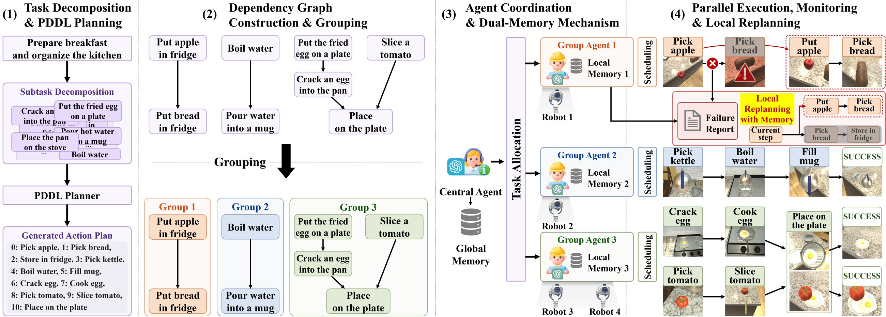
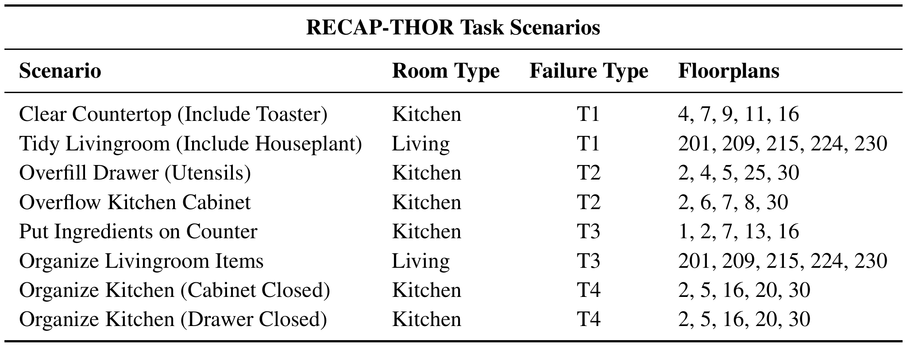
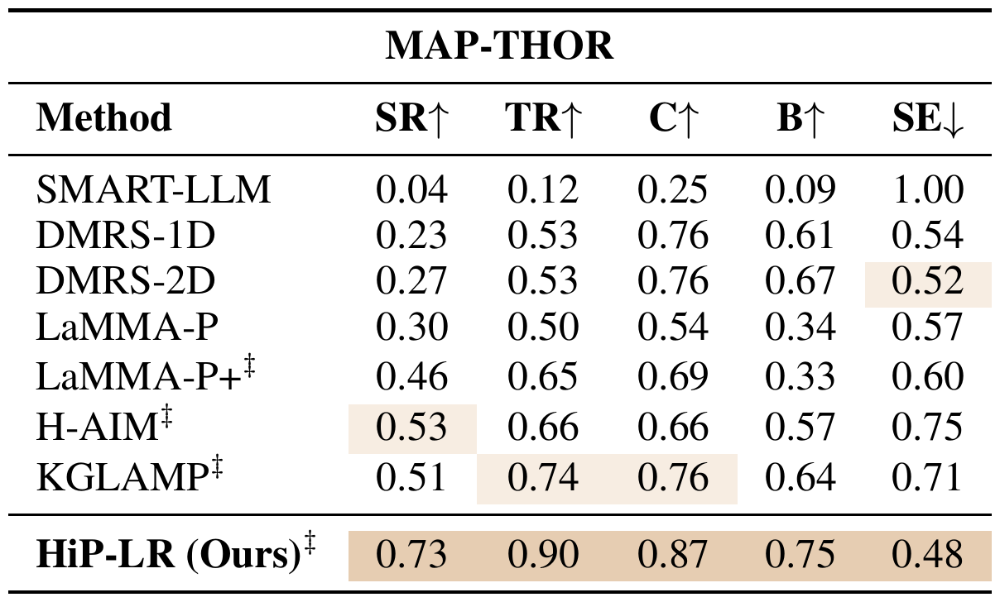
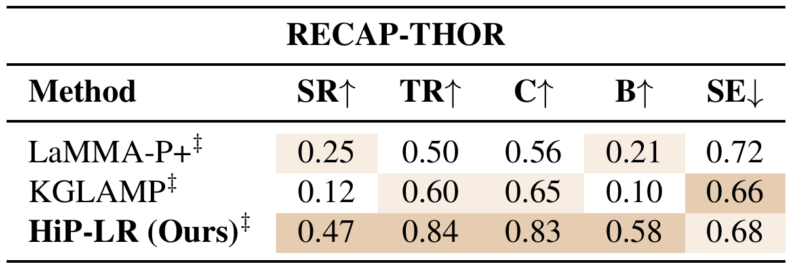
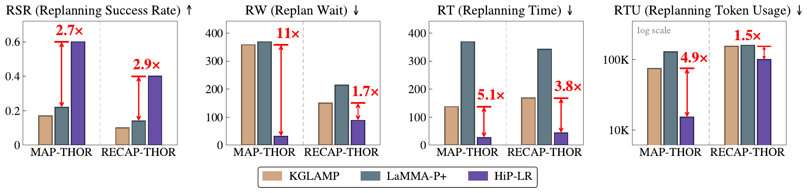
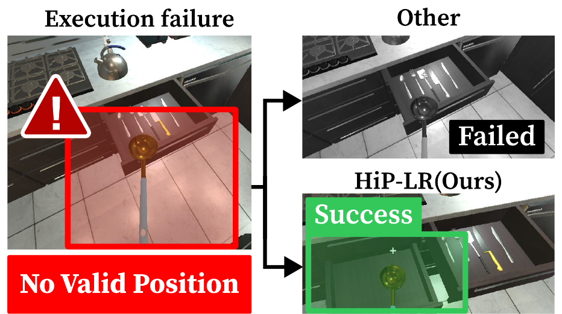
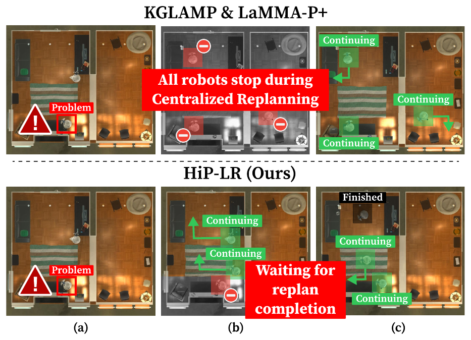

Department of Computer Science and Artificial Intelligence, Dongguk University
*Equal contribution†Corresponding authors
Large Language Model (LLM)-driven multi-robot systems struggle with long-horizon tasks due to planning and execution complexities. As task dependencies grow, centralized planners suffer from context explosion and hallucinations, while minor runtime errors can disrupt the entire operation. Current monolithic methods overload LLMs and cause unnecessary global halts during error recovery. To address this, we introduce Hierarchical Planning with Localized Failure Recovery (HiP-LR). HiP-LR uses a two-level hierarchy to divide complex instructions into dependency-isolated subtask groups. A central agent allocates global tasks, while local agents execute specific plans, keeping LLM contexts compact. Furthermore, a PDDL-based dual-memory structure enables failure-localized replanning: if an error occurs, only the affected group pauses to replan, allowing others to continue uninterrupted. Evaluated on MAP-THOR, HiP-LR improves the task success rate by 38% and reduces replan-wait costs by 90% over state-of-the-art baselines. Furthermore, HiP-LR demonstrates highly robust recovery capabilities on our novel failure-injection benchmark, RECAP-THOR.

A Central Agent decomposes the instruction into PDDL-grounded subtasks and links them by causal and resource dependencies. Each connected component of this graph becomes an isolated subtask group handled by its own Local Agent. When an action fails, only that group pauses and replans from its PDDL memory, while the other groups keep executing.
RECAP-THOR (REplanning CAPability under failures in THOR) is a failure-injection benchmark built on AI2-THOR. Every task is designed to fail at a predetermined action, so recovery can be compared across methods under identical conditions.






@inproceedings{lee2026hiplr,
title = {{HiP-LR}: Hierarchical Planning with Localized Failure
Recovery for Long-Horizon Multi-Robot Tasks},
author = {Lee, Chaerin and Kim, Seoyoon and Lee, Seungbeen and
Lee, Woojin and Song, Soohwan},
booktitle = {Findings of the Association for Computational
Linguistics: EMNLP 2026},
year = {2026}
}
This work was supported by the MSIT of the Republic of Korea through the National Research Foundation (NRF) (No. RS-2026-25489947) and the Commercialization Promotion Agency for R&D Outcomes (COMPA) (No. 2710086167).